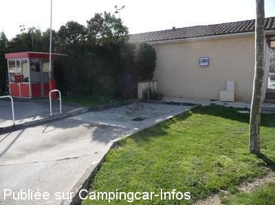
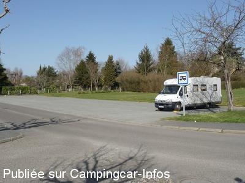
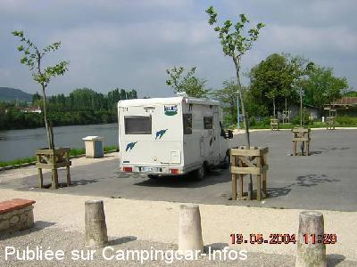

ASN = Aire de services avec stationnement nuit possible de :
SAINT SYLVESTRE SUR LOT
(N° 794)
Accès/adresse :
Rue Jean Moulin
47140 SAINT SYLVESTRE SUR LOT
47140 SAINT SYLVESTRE SUR LOT
Latitude : (Nord) 44.39576° Décimaux ou 44° 23′ 44′′
Longitude : (Est) 0.80564° Décimaux ou 0° 48′ 20′′
Tarif : Gratuit
Type de borne : Artisanale
Services :


Présence d'un petit marché le mercredi matin
Autres informations :
12 emplacements.
Tél : +33 (0)553 412 458

Le 10/03/2011 par jjd14

Le 10/03/2011 par jjd14

Le 13/05/2004 par blorog
de
PTH72
le 18/08/2015 :
Passés le 22/06/2015. Aire au calme et près des commerces.
Ne pas arriver trop tard car assez chargée.
Merci à la commune.
Passés le 22/06/2015. Aire au calme et près des commerces.
Ne pas arriver trop tard car assez chargée.
Merci à la commune.
de
marieange
le 29/09/2014 :
le 29/09/2014
michel et marie
nous nous sommes arrété a l'aire de camping car de SAINT SYLVESTRE SUR LOT tres bien située pres d'une grande surface pres du LOT au calme et petit commerces tres proche je dit un grand merci a la municipalité car c'est tres rare de trouver des aires proche du centre ville et des commerces .a bientot pour une prochaine halte.
le 29/09/2014
michel et marie
nous nous sommes arrété a l'aire de camping car de SAINT SYLVESTRE SUR LOT tres bien située pres d'une grande surface pres du LOT au calme et petit commerces tres proche je dit un grand merci a la municipalité car c'est tres rare de trouver des aires proche du centre ville et des commerces .a bientot pour une prochaine halte.
de
Nicole et Michel
le 27/09/2013 :
Ns sommes passés le 10/9/2013 à 15h, plus de place car certains sans-gêne et sûrement "ventouses" s'étalent comme s'ils étaient chez eux !!! en ns faisant signe d'aller sur le Parking d'à côté où il y a des enfants et autres véhicules et vélos !!! toutefois l'aire parait très bien par son emplacement !!! avons passé la nuit à Tournon d'Agenais et n'avons pas perdu au change !!!!!
Ns sommes passés le 10/9/2013 à 15h, plus de place car certains sans-gêne et sûrement "ventouses" s'étalent comme s'ils étaient chez eux !!! en ns faisant signe d'aller sur le Parking d'à côté où il y a des enfants et autres véhicules et vélos !!! toutefois l'aire parait très bien par son emplacement !!! avons passé la nuit à Tournon d'Agenais et n'avons pas perdu au change !!!!!
de
daniel du 59
le 15/02/2013 :
J'ai passé 3 jours du 5/10/2012 au 8/12/2012 sur la place
à coté du lot superbe.MERCI la commune
J'ai passé 3 jours du 5/10/2012 au 8/12/2012 sur la place
à coté du lot superbe.MERCI la commune
de
cricri76
le 12/08/2012 :
Nous avons passé la nuit du 31 juillet à St Sylvestre s/Lot. Charmant village avec un Intermarché en plein centre du village. Le lieu de stationnement est légèrement en pente mais avec les cales aucun problème. Très belle aire de service à côté de la station essence ainsi que des WC. Possibilité de stationner aussi sur le parking ombragé proche du Lot mais ATTENTION le mercredi matin il le marché. De plus juste à côté il y a un petit camping sympathique pour prolonger le séjour.
Nous avons passé la nuit du 31 juillet à St Sylvestre s/Lot. Charmant village avec un Intermarché en plein centre du village. Le lieu de stationnement est légèrement en pente mais avec les cales aucun problème. Très belle aire de service à côté de la station essence ainsi que des WC. Possibilité de stationner aussi sur le parking ombragé proche du Lot mais ATTENTION le mercredi matin il le marché. De plus juste à côté il y a un petit camping sympathique pour prolonger le séjour.
de
CHL
le 03/08/2011 :
Aire calme le soir mais plus bruyante le matin avec les camions de livraison pour l'intermarché.
Aire calme le soir mais plus bruyante le matin avec les camions de livraison pour l'intermarché.
de
Frédo40
le 23/04/2011 :
De passage en avril aire nikel(propre), pratique et bien placée au bord du lot et en plein centre, bravo.
Impeccable pour un transit.
De passage en avril aire nikel(propre), pratique et bien placée au bord du lot et en plein centre, bravo.
Impeccable pour un transit.
de
Dede 02
le 13/07/2010 :
De passage en avril, aire très agréable au bord du Lot, idéale pour les pécheurs. Merci à la municipalité pour son accueil, nous reviendrons.
De passage en avril, aire très agréable au bord du Lot, idéale pour les pécheurs. Merci à la municipalité pour son accueil, nous reviendrons.
de
dan
le 16/04/2010 :
Nuit calme. Aire au coeur de la ville, à coté de l'Intermarché. Ville charmante le long du Lot. Services et parking gratuits. Merci à la municipalité.
Nuit calme. Aire au coeur de la ville, à coté de l'Intermarché. Ville charmante le long du Lot. Services et parking gratuits. Merci à la municipalité.
de
billy40
le 08/08/2009 :
Bonjour. Chouette, ON RESPIRE AU BORD DE L'EAU, face aux péniches, Intermaché à deux pas. Seule la vidange reste un problème avec 2 barres de fer au raz du sol (j'ai failli tomber) qui empèche de circuler autour du CC. Même robinet (à pression) WC et eau propre.
Bonjour. Chouette, ON RESPIRE AU BORD DE L'EAU, face aux péniches, Intermaché à deux pas. Seule la vidange reste un problème avec 2 barres de fer au raz du sol (j'ai failli tomber) qui empèche de circuler autour du CC. Même robinet (à pression) WC et eau propre.
de
Mataf 59
le 19/04/2008 :
Attention au jour de marché (le mercredi, je crois)pour le stationnement. Mais il y a possibilité de stationner sur le petit parking en graviers de l'autre côté du supermarché.
Super arrêt, très agréable, calme comme on aimerait en voir plus souvent. Très grand merci à la commune!
Attention au jour de marché (le mercredi, je crois)pour le stationnement. Mais il y a possibilité de stationner sur le petit parking en graviers de l'autre côté du supermarché.
Super arrêt, très agréable, calme comme on aimerait en voir plus souvent. Très grand merci à la commune!
de
Roger Blondel
le 17/06/2007 :
Appréciée pour sa proximité des commerces et par la vue agréable, l'aire souffrait d'un accès peu pratique à sa plateforme de vidanges. Ce problème est maintenant règlé : entrée en ligne droite et longueur de la plateforme portée à 12 mètres donc propre à recevoir les plus grands camping-cars.
Appréciée pour sa proximité des commerces et par la vue agréable, l'aire souffrait d'un accès peu pratique à sa plateforme de vidanges. Ce problème est maintenant règlé : entrée en ligne droite et longueur de la plateforme portée à 12 mètres donc propre à recevoir les plus grands camping-cars.
de
Guillot Michel
le 13/10/2006 :
Plate-forme de vidange très peu accessible et gênante pour les usagers sortant de la station-service du super-marché. Parking très agréable en bord de rivière, mais nous n'avons pas pu rester parce qu'il y avait le marché le lendemain tôt.
Plate-forme de vidange très peu accessible et gênante pour les usagers sortant de la station-service du super-marché. Parking très agréable en bord de rivière, mais nous n'avons pas pu rester parce qu'il y avait le marché le lendemain tôt.